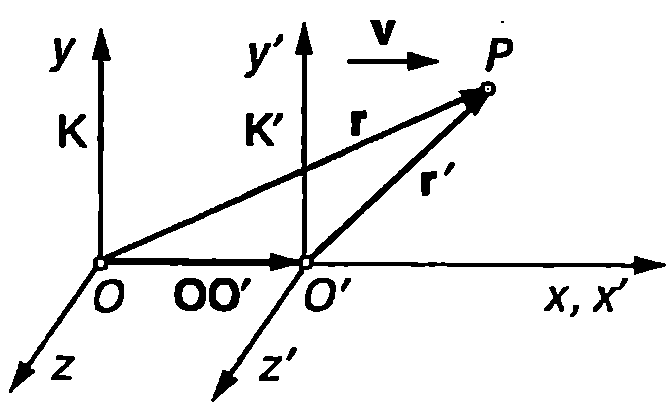
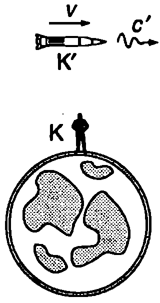
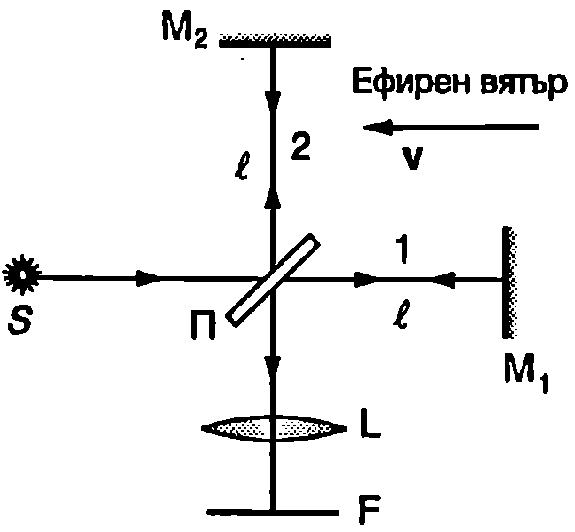

Галилеев принцип на относителността
Да разгледаме две инерциални отправни системи и , които се движат една спрямо друга. Ще се ограничим с частния случай, когато в началния момент началото на съвпада с началото на . Освен това ще смятаме, че осите , и са съответно успоредни на осите , и (всички величини с щрих се отнасят за отправната система ). Ще приемем отправната система за неподвижна. Системата се движи спрямо в направление на оста с постоянна скорост (Фиг. \ref{fig:96.1}). Нека материална точка в момента се намира в положение . Тогава, както се вижда от Фиг. \ref{fig:96.1}, радиус-векторите на точка в двете отправни системи са свързани с равенството , където е преместването на началото за време . Следователно:
Векторното уравнение се записва по компоненти:
Уравнения \eqref{eq:96.1} и \eqref{eq:96.2} изразяват галилеевите трансформации — преобразуването на координатите и времето в класическата механика при преминаване от една инерциална отправна система () в друга инерциална отправна система (). Те се основават на две предположения, върху които се изгражда класическата механика:
-
абсолютност на времето;
-
абсолютност на разстоянията в пространството.

`Фиг. 96.1`
В класическата механика се приема, че времето тече по един и същ начин във всички отправни системи. В галилеевите трансформации абсолютността на времето се изразява с равенството . От него произтичат очевидни на пръв поглед следствия, които преди създаването на теорията на относителността не будели съмнения. Например, ако две събития стават едновременно за някакъв наблюдател, те са едновременни и за всеки друг наблюдател. Освен това от абсолютността на времето следва, че интервалът от време между две събития е еднакъв във всички отправни системи.
Ако радиус-векторите и (Фиг. \ref{fig:96.1}) и векторът се измерваха в една и съща отправна система, равенство \eqref{eq:96.1} би било очевидно. В действителност обаче се измерва в отправната система , докато и се измерват в . Следователно галилеевите трансформации \eqref{eq:96.1} не могат да се получат, без да се използва предположението, че дадена отсечка има една и съща дължина във всички отправни системи (абсолютност на разстоянията).
Диференцираме двете страни на уравнение \eqref{eq:96.1} по времето, отчитайки, че . Получаваме , или
където е скоростта на материалната точката в отправната система , а е скоростта ѝ спрямо . Уравнение \eqref{eq:96.3} изразява галилеевия закон за събиране на скорости в класическата механика. Диференцираме двете страни на уравнение \eqref{eq:96.3} по времето и намираме връзката между ускоренията на материалната точка, измерени в двете отправни системи:
където сме отчели, че . От равенство \eqref{eq:96.4} следва изводът, че ускорението на една материална точка е еднакво във всички инерциални отправни системи. Казва се, че ускорението е инвариантно по отношение на галилеевите трансформации.
В класическата механика силата , масата , както и законите на Нютон, също са инвариантни по отношение на галилеевите трансформации:
В нютоновата механика е в сила т. нар. механичен принцип на относителността (галилеев принцип на относителността), според който законите на механиката са еднакви във всички инерциални отправни системи. Това означава, че в различните инерциални отправни системи механичните процеси протичат еднакво, ако условията са едни и същи. С никакъв механичен експеримент, проведен в затворена тема, не може да се установи дали тя е в покой или се движи праволинейно и равномерно. Всички инерциални отправни системи са напълно равноправни. С помощта на законите на механиката не може да се отдели някаква абсолютна'' отправна система, спрямо която да се разглежда абсолютното” движение и покой.
Опит на Майкелсон
Уравненията на Максуел, за разлика от уравненията на механиката, не са инвариантни спрямо галилеевите трансформации. Например от тях следва, че във вакуум електромагнитните вълни се разпространяват със скорост m/s.
Възниква въпросът, в коя отправна система се измерва тази скорост. Съгласно с галилеевия закон за събиране на скорости \eqref{eq:96.3} скоростта на светлината би трябвало да е различна в различните отправни системи. Това се илюстрира от следния прост пример. Ракета, която се движи със скорост спрямо Земята, излъчва светлинен импулс (Фиг. \ref{fig:96.2}). Означаваме със скоростта на светлината спрямо ракетата. В съответствие с галилеевия закон за събиране на скорости, скоростта на светлината спрямо земната повърхност е

`Фиг. 96.2`

Интерферометър на Майкелсон.
`Фиг. 96.3`
В края на XIX век учените предполагат, че електромагнитните вълни и светлината представляват трептения на ефира — хипотетична среда, която изпълва цялото пространство и пронизва всички тела, без да влияе на движението им. Смятало се е, че уравненията на Максуел имат своя обичаен вид само в отправна система, свързана с ефира. Това означава, че в електродинамиката, за разлика от механиката, би трябвало да съществува привилегирована инерциална отправна система, която се различава от всички останали. Това е отправната система, в която ефирът е неподвижен. Предполагало се е, че във всички други отправни системи ефирът се движи (духа'' ефирен вятър), поради което уравненията на Максуел променят вида си, а скоростта на светлината е различна. Откриването на ефирния вятър е една от главните задачи на физиката в края на XIX век. С тази цел са проведени редица изключително прецизни за възможностите на тогавашната техника физични експерименти, централно място сред които заема знаменитият опит на американския физик Алберт Майкелсон (1852-1931). Майкелсон си поставя задачата да измери скоростта на абсолютното движение на Земята спрямо привилегированата отправна система (световния ефир). За целта той използва конструирания от него *интерферометър на Майкелсон*, чиято принципна схема е показана на Фиг. \ref{fig:96.3}. Сноп монохроматична светлина с дължина на вълната $\lambda$ преминава през пластинката П, върху едната повърхност на която е нанесен тънък слой метал. Светлината частично се отразява и частично преминава през покритието. Така снопът се разделя на две части, които се отразяват от огледалата $M_1$ и $M_2$, след което отново преминават през пластинката и интерферират помежду си. Интерференчната картина се наблюдава във фокалната равнина $F$ на лещата $L$. Двете рамена на интерферометъра имат еднаква дължина $l$. Ако скоростта на светлината е еднаква във всички направления, двата снопа биха изминали разстоянието $2l$ от пластинката до огледалата и обратно за еднакво време $t = 2l/c$, при което не би възникнала фазова разлика между двете вълни. Да приемем, че Земята заедно с опитната постановка се движи със скорост $v$ спрямо ефира. За наблюдател от Земята ефирът се движи в противоположната посока със същата по големина скорост $v$ (Фиг. \ref{fig:96.3}). Според теорията на ефира скоростта на светлината е $c$ спрямо неподвижния ефир. Съгласно с галилеевия закон за събиране на скорости скоростта на снопа 1 е $c-v$ при движение към огледалото, а скоростта на отразения от огледалото сноп е $c+v$. Може да се направи аналогия с движението на лодка: срещу течението лодката се движи с по-малка скорост, отколкото по течението. В случая ефирният вятър, който духа” от огледалото към източника, променя скоростта на светлинния сноп 1. Доказва се (вж. пример 96.1), че в този случай снопът 1 изминава разстоянието за по-голямо време от снопа 2. Ако интерферометърът се завърти на 90°, тогава снопът 2 ще се движи в направление на “ефирния вятър” и ще закъснява. Следователно интерференчната картина при завъртане на интерферометъра трябва да се измести. Пресмятанията показват, че през центъра на екрана, върху който се наблюдава интерференчната картина, трябва да преминат интерференчни ивици. Тъй като за отношението се очаквала много малка стойност, от порядъка на (при km/s — скорост на орбиталното движение на Земята около Слънцето), Майкелсон и неговите сътрудници проявяват изключителни качества на експериментатори, за да подобрят точността на измерванията. За намаляване на вибрациите и изкривяванията при завъртането на интерферометъра последният е монтиран върху масивна квадратна каменна плоча със страна 1,5 m, чиято кръгла поставка плува в съд с живак. Чрез система от огледала е постигната ефективна дължина на рамената на интерферометъра m.
Този знаменателен за развитието на физиката опит е осъществен от Майкелсон през 1881 година, а след това е повторен с по-голяма точност от Майкелсон съвместно с Морли през 1887 година.
Всички опити дават отрицателен резултат — не е регистрирано отместване на интерференчната картина. Майкелсон стига до извода, че ефирен вятър не съществува. Ще отбележим, че точността на опита дава основание да се твърди, че скоростта на ефирния вятър не може да е по-голяма от 7 km/s. В последствие опитът на Майкелсон е многократно повтарян и точността на измерванията постоянно нараства. Опитите, проведени с лазери и -лъчи в съвремените лаборатории показват, че с точност около 1 m/s скоростта на светлината във вакуум спрямо Земята е еднаква във всички направления.
Пример 96.1
Колко интерференчни линии би трябвало да преминат през центъра на зрителното поле в опита на Майкелсон и Морли (Фиг. \ref{fig:96.3}), ако съществуваше ефирен вятър със скорост m/s? Ефективната дължина на всяко от двете рамена на интерферометъра е m. Приемете дължината на вълната на светлината за nm. \end{psexample}
Решение
Времето, за което снопът 1 (Фиг. \ref{fig:96.3}) изминава разстоянието от пластинката до огледалото и обратно, е

`Фиг. 96.4`
В лабораторната отправна система (спрямо Земята) светлинният сноп 2 се движи перпендикулярно на ефирния вятър със скорост , където е скоростта на снопа спрямо ефира, а е скоростта на ефирния вятър. От правоъгълния триъгълник, който образуват трите вектора (Фиг. \ref{fig:96.4}), определяме:
Снопът 2 изминава разстоянието от пластинката до огледалото и обратно за време
Разликата във времената, за които двата снопа изминават съответните разстояния в направление на двете взаимно перпендикулярни рамена на интерферометъра, е
Тъй като , използваме приближението при ; в случая ) и получаваме
Разликата във времената е еквивалентна на ефективен допълнителен път за снопа 1. След завъртането на интерферометъра на 90° ефективният допълнителен път е за втория сноп. При изменение на ефективния път на единия от лъчите с през центъра на екрана преминава една интерференчна ивица. Относителното изменение в ефективните пътища на двата лъча при завъртането на интерферометъра е . Затова през центъра на екрана трябва да преминат
След заместване на числените стойности получаваме . Точността, с която Майкелсон и Морли извършват експерименталните измервания, дава възможност да се регистрира отместване на интерференчната картина, ако . Опитът обаче показва, че очакваното отместване () не се наблюдава.
Принципи на теорията на относителността
Отрицателният резултат от опита на Майкелсон и невъзможността да се прилага за светлината законът на Галилей за събиране на скорости се обясняват от теорията на относителността. Айнщайн изгражда тази теория върху два принципа.
1. Принцип на относителността: Всички физични закони са еднакви във всички инерциални отправни системи.
2. Принцип за постоянството на скоростта на светлината във вакуум: Скоростта на светлината във вакуум има една и съща стойност m/s във всички инерциални отправни системи, независимо с каква скорост се движи източникът или приемникът на светлина.
Принципът на относителността на Айнщайн обобщава механичния принцип на относителността. Според него не е възможно с никакъв експеримент не само механичен, но и електромагнитен, оптичен (например измерване на скоростта на светлината) и т.н., да се установи дали лабораторията, в която той се провежда, е в покой или се движи праволинейно и равномерно. Следователно всички инерциални отправни системи са напълно равностойни и не съществува признак, по който да се отдели една от тях като “абсолютна”.
Класическата механика предполага, че взаимодействието на телата се осъществява мигновено: силата, действаща в даден момент на едно тяло, се определя от положението и скоростите на другите тела в същия този момент. Според теорията на относителността обаче, скоростта на светлината във вакуум е максималната скорост, с която се разпространяват взаимодействията в природата. Тази скорост е еднаква във всички инерциални отправни системи и е универсална природна константа.
Задачи
-
Каква е била целта на опита на Майкелсон? Какъв е резултатът от него?
-
В какво се състои разликата между Галилеевия принцип на относителността и принципа на относителността на Айнщайн?
-
Космически кораб, който се движи спрямо Земята със скорост (където е скоростта на светлината), изпраща два светлинни сигнала: единия по посока на движението на кораба, а другия в противоположната посока. Колко е скоростта на двата сигнала спрямо Земята?